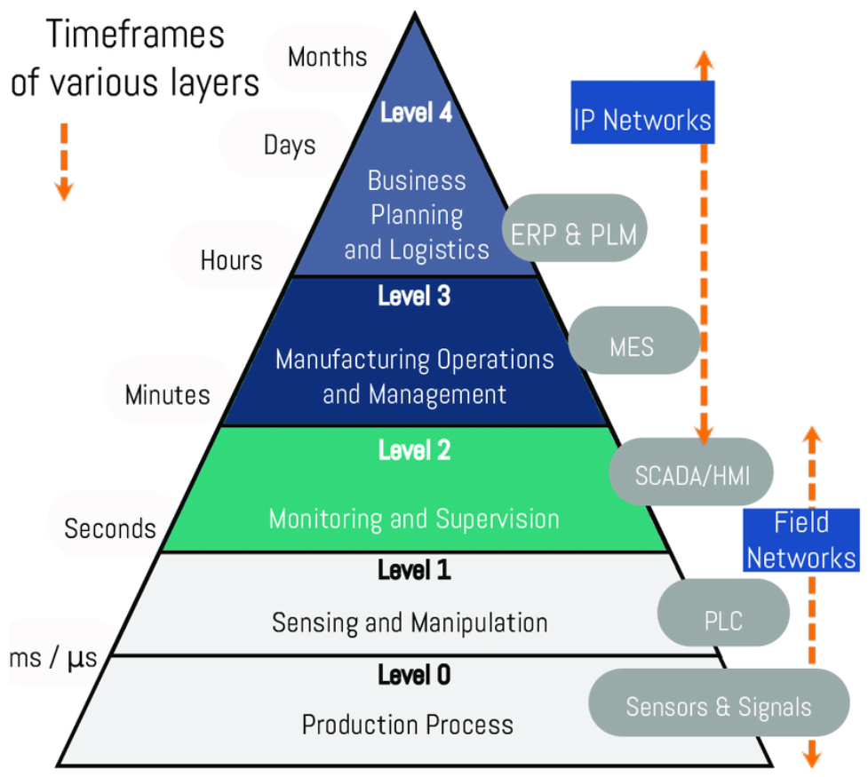
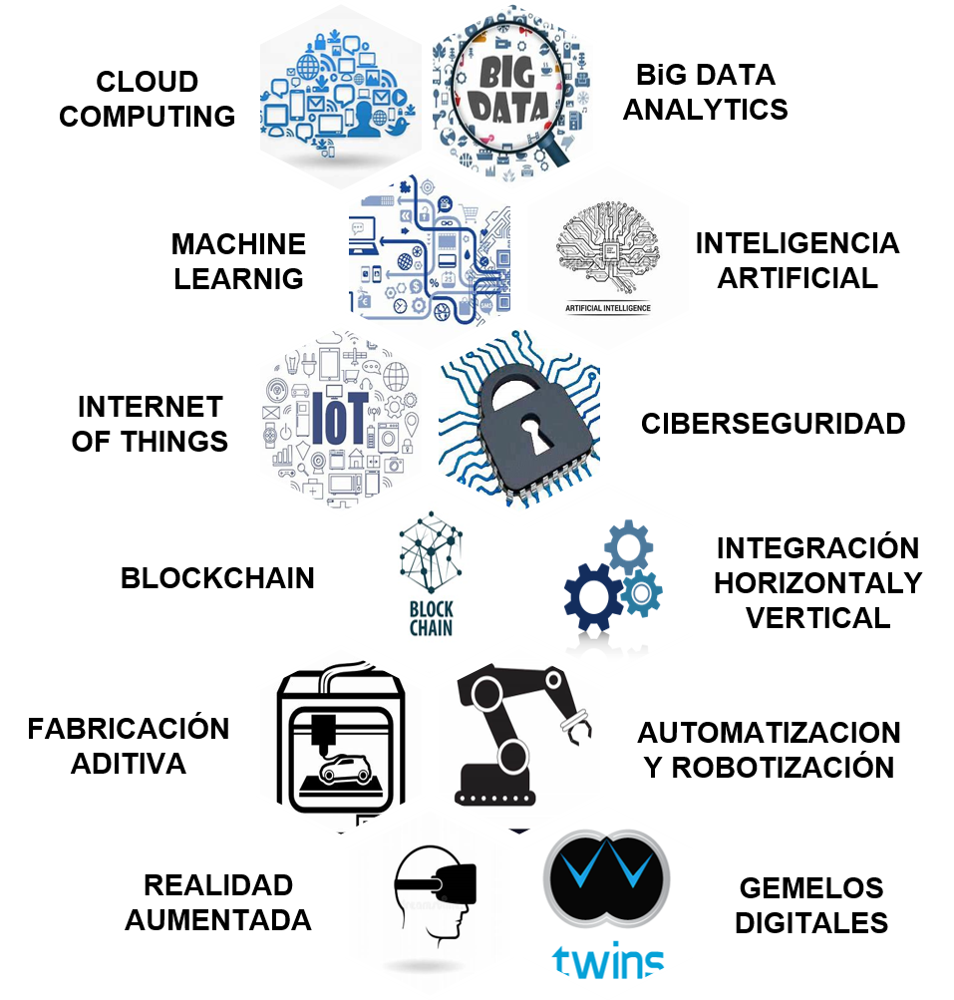
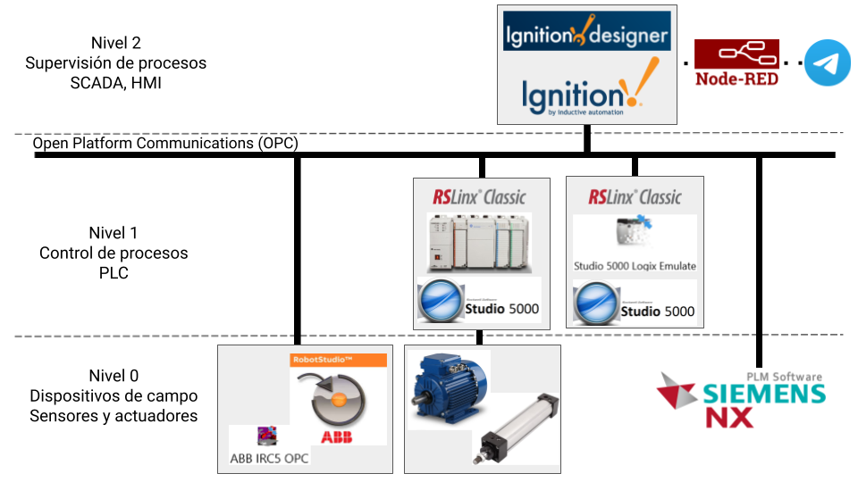

Resumen ISA 95
Para lograr una adecuada estructuración de un proyecto de automatización para procesos de manufactura e industriales se necesita conocer el estándar ISA-95, o también conocida como la piramide de la automatización. En esta podemos observar diferentes niveles, cada uno cumple una función definida y que se debe comunicar con los demás niveles. Estos niveles son:
- Nivel 0 - Proceso de producción: Este nivel está conformado por el conjunto de actuadores y sensores dispuestos en la planta del proceso de manufactura. Dentro del alcance de este proyecto no se cuenta con una planta real por lo que, mediante un proceso de comisionamiento virtual, se realiza la simulación de los procesos en algunas de las celdas.
- Nivel 1 - Control: Este nivel está conformado por el conjunto de PLC, DCS y/o PAC que realizan la lectura de las señales dadas por los sensores y envían señales a los actuadores, para realizar sus funciones dentro de la celda. Dentro del alcance de este proyecto se utiliza el software Studio 5000 para el desarrollo de la lógica de PLC Allen Bradley mediante lenguajes definidos en las normas IEC 61131-3, aunque no se cuentan con PLC físicos, se realiza las simulaciones por medio de PLC emulados.
- Nivel 2 - Supervisión: Este nivel está conformado por el sistema y software SCADA que permiten el control, supervisión, historización y alarmas, normalmente a distancia, de la planta de producción. Dentro del alcance de este proyecto se logra el desarrollo de software SCADA, con conexión a la red local de los PLC, por medio del software Ignition.
- Nivel 3 - Planeación: Este nivel está conformado por los sistemas de ejecución de manufactura (MES), los cuales permite la gestión y regulación de los flujos de producción de la planta. Dentro del alcance de este proyecto, en el módulo de gestión de producción, se realizó el control y optimización del flujo de producción mediante un estudio del mercado para conocer el takt time necesario para el cumplimiento de la demanada
- Nivel 4 - Administración: Este nivel está conformado por los sistemas de administración de recursos empresariales (ERP), que gestionan los inventarios, facturación, contabilidad y logística de procesos. Dentro del alcance de este proyecto, en el módulo de gestión de proyecto y gestión económica, se realizó la gestión de los costos del proyecto, la planeación del costo de producto y la planeación tanto de la financiación del proyecto como la logística de tiempos.

También es importante resaltar los tiempo de procesamiento y envío de información entre los niveles de la pirámide. Para el nivel de campo, es crítico la lectura de sensores y el control de actuadores en escalas de tiempo de ms y hasta us. Para el nivel de control regularmente los controladores industriales tienen tiempos de procesamiento de ordenes de ms. Para el nivel de supervisión, los SCADA pueden recibir señales en ordenes de los segundos, aunque el monitoreo de señales si puede ser en rangos más amplios de tiempo. Para el nivel de planeación, se manejan el procesamiento de información en ordenes de horas o hasta días. Por último para la nivel de administración hay una toma de decisiones en ordenes de tiempo de días, semanas o hasta meses.
Resumen tecnologías 4.0
Las industrias 4.0 hacen referencia a la evolución de las formas como se desarrollan los procesos en las empresas, ya sean de manufactura, operativos o administrativos, para generar nuevos modelos de negocios. En particular destacaremos todas las tecnologías habilitadoras disponibles para las empresas para realizar una transformación digital de disrumpir el mercado.
En particular nos concentraremos en 3 tecnologías:
- Gemelos digitales: Es una replica digital de una entidad física existente. A diferencia de una sombra digital, que logra simular todos los procesos que realiza la planta a tiempo real, el gemelo digital añade funcionalidad como la comunicación en dos vías para controlar el proceso físico desde el simulador. Esto puede ser utilizado para varios fines, como prevención de eventualidades, predicción de procesos de mantenimiento o simulación de nuevos proceso.
- Internet de las cosas (IoT): Esta tecnología contempla la interconexión de los objetos físicos a través de redes de comunicaciones, en particular el internet, para convertirlos en objetos inteligentes y autónomos.
Propuestas de aplicación tecnologías 4.0
Como propuesta para la implementación de tecnologías en el proyecto, se propuso la implementación de 3 mejoras:
- Implementación de gemelo digital por medio de los actuadores (como motores, pistones neumáticos, botones) encontrados en el Laboratorio de Automatización de la Universidad Nacional de Colombia. Este consiste en que la planta simulada en NX esté ligada a estos actuadores físicos para realizar una sombra digital, a su vez que la planta física (por medio de los botones) se pueda realizar cambios a la simulación.
- Implementación de SCADA Cloud por medio de los servidores de Google Cloud. Este SCADA será el encargado de controlar y monitorear los procesos de las celdas simuladas en NX por medio de la comunicación con los SCADA locales.
